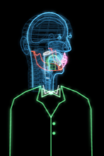
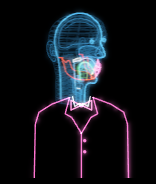
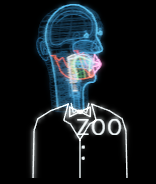
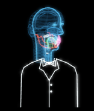
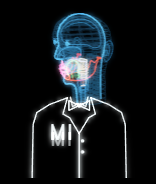

Acapellera
曲のファイルをドロップすると、12 人の団員がその曲をアカペラで歌い直します。
団員の声はすべて CHIMERA の物理モデル（肺・声帯・声道・唇の数値シミュレーション）による合成音声です。元の録音は再生しません。
GitHub でソースを見る →
団員紹介
12 人、4 パート。担当と処理はすべて acapellera/server/make_sing.py の現在の設定値です。
リード 1 人・手前の段の中央

- 元の音
- 分離した歌声の音符のうち、その時刻でいちばん強い音
- 言葉
- 音の高さで決まる。ド=mi、レ=pa、ミ=zoo、ファ=di、ソ=ree、ラ=ru、シ=ma（# の付く音は元の音と同じ言葉）
- 同じ音程
- 続くときは、歌声の音量の落ち込みが 2 dB 以上で、かつ新しい歌い出しの強さが曲の上位 50% なら言い直し、それ以外は 1 音につなげて伸ばす
- 休符
- 次の音まで 0.5 秒以上空いたら休符。同じ音程が続く間は休符にしない
- 音量
- +8 dB（全パートで最大）。1 音ずつの音量補正はしない
- 表示
- サビで 1.14 倍、サビ前で 1.05 倍に大きくなる
ハモリ 2 人・手前の段の左右

- 元の音
- 歌声で 2 番目に強い音
- 言葉
- do
- 同じ音程
- 毎回言い直す
- 音量
- −2 dB、1 音ずつ聞こえ方をそろえる

- 元の音
- 歌声で 3 番目に強い音
- 言葉
- ree
- 同じ音程
- 毎回言い直す
- 音量
- −2 dB、1 音ずつ聞こえ方をそろえる
ドラム 3 人・奥の段の中央

- 元の音
- ドラム音の 20〜150 Hz 帯の鳴り始め
- 声
- 男性、G2（98 Hz）固定
- 長さ
- 最長 0.15 秒、次の打音で切る
- 音量
- −5 dB

- 元の音
- 150〜2500 Hz 帯の鳴り始め
- 声
- 女性、A3（220 Hz）固定
- 長さ
- 最長 0.12 秒
- 音量
- −5 dB

- 元の音
- 6000〜11025 Hz 帯の鳴り始め
- 声
- 子ども、D5（587 Hz）固定
- 長さ
- 最長 0.08 秒
- 音量
- −5 dB
コーラス隊 6 人・奥の段の両側

- 元の音
- ベース音で、その時刻に強い 2 音のうち低い方
- 言葉
- zoo

- 元の音
- ベース音で、強い 2 音のうち高い方
- 言葉
- di

- 元の音
- ギター音で、強い 2 音のうち低い方
- 言葉
- no

- 元の音
- ギター音で、強い 2 音のうち高い方
- 言葉
- ku

- 元の音
- ピアノ音で、強い 2 音のうち低い方
- 言葉
- ru

- 元の音
- ピアノ音で、強い 2 音のうち高い方
- 言葉
- mi
コーラス隊 6 人に共通：同じ音程でも毎回言い直す、音量 −2 dB、1 音ずつ聞こえ方をそろえる。
全団員に共通の決まり
| 声の種類 | ドラム以外は、受け持つ音符の高さの中央値で決める（G3 未満は男性、A#4 未満は女性、A#4 以上は子ども）。声の音域に入らない音は、オクターブだけ移す |
|---|---|
| 休符 | ドラム以外は、自分の次の音まで 0.5 秒未満なら前の音を伸ばしてつなぎ、0.5 秒以上なら休符にする |
| 短い音 | 0.08 秒未満の音は、直前の音のすぐ後なら前の音に含め、そうでなければ省く |
| 音量補正 | リード以外は、1 音ずつ、書き出した音のスペクトルに等ラウドネス曲線（ISO 226、60 phon）の重みをかけて聞こえる大きさを測り、パート内の平均にそろえる（最大 ±12 dB） |
| 曲の区間 | SongFormer で区間を推定し、サビで +3 dB、サビ前で +1 dB を全員に一律でかける |
| 登場順 | Play の後、照明の音 3 回に合わせて、奥の段 → ハモリ → リードの順に登場する |
処理の流れ
GPU サーバ（11 GB）で 188 秒の曲を処理した例：分離 7.6 秒、採譜 6.2 秒、合成 58.8 秒、ドロップから再生準備まで 82 秒。
動かし方
このページは紹介のみで、何にも接続せず、曲も受け取りません。アプリは自分の PC で動かします。分離・採譜・合成は、同じ PC でも、ssh でつながる GPU サーバでも実行できます。
git clone https://github.com/YUSEITASHIRO/acapellera
cd acapellera
bun install
bash acapellera/server/setup.sh # 処理側の Python 環境（初回のみ）
bash acapellera/server/setup_engine.sh # CHIMERA の CLI（初回のみ）
python acapellera/launch.py # GPU サーバで処理するときは --remote詳しい手順（Windows、GPU サーバの設定、任意の効果音）は acapellera/README.md。
ドロップした曲と、そこから作った歌は、自分の PC と自分のサーバの中にだけ置かれ、git には入りません。
クレジット
合成音声・エンジン・Web アプリ：CHIMERA（Jameson Hodge、MIT）。分離：demucs（MIT）。採譜：basic-pitch（Apache-2.0）。区間：SongFormer（CC BY 4.0）。
効果音：開演ブザーと照明の音は OtoLogic（CC BY 4.0）。客席のざわめきと幕の音は配布元の規約により同梱していません（入手先は README に記載）。